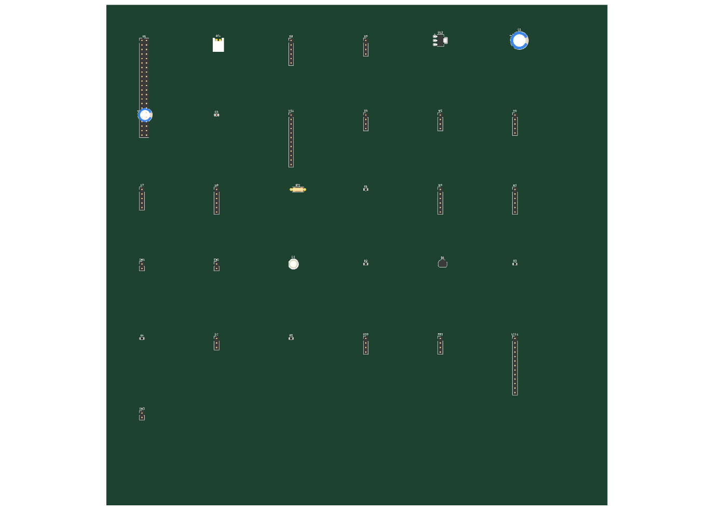

Urine Analyzer Lite
Project Status & Engineering Report — Levram Lifesciences
Device: automated 10-pad urine reagent-strip reader (reflectance photometry) ·
Regulatory pathway: India / CDSCO · Repo: github.com/Sid93/urine-analyzer-lite · Report date: 2026-05-21
Executive summary. The project is a benchtop/point-of-care urine dipstick analyzer
("Design A": ESP32-S3 + dual TCS34725 reflectance optics, motorized strip transport, thermal
printout, SPI touch display). A complete firmware draft, India-sourced BOM, and a Blueprint
mechanical concept already existed. Since then we have backfilled the regulatory foundation
(Stage 0), integrated the research and design inputs (Stages 1 & 3), and
completed the electrical engineering groundwork (Stage 4) — reconciling three conflicting
design sources into one verified pin map, fixing real hardware bugs, locking the open design
decisions, and generating an ERC-clean schematic and a net-assigned starting PCB,
both validated with KiCad 10. The design is now coherent and ready for an electronics engineer to
verify, route, and prototype.
1. The device (Design A)
| Attribute | Specification |
|---|
| Function | Semi-quantitative reading of the standard 10-pad urine reagent strip (leukocytes, nitrite, urobilinogen, protein, pH, blood, specific gravity, ketones, bilirubin, glucose) |
| Principle | Diffuse reflectance photometry; dual TCS34725 RGB sensors + high-CRI LED; HSV classification |
| MCU | ESP32-S3 (USB-CDC), firmware state machine + sensor drivers complete (first draft) |
| Mechanics | GA12-N20 motor strip transport w/ encoder + limit switches; 3D-printed chassis/optical chamber |
| Display | 3.5" SPI TFT (ILI9488) + XPT2046 touch decided |
| Output / extras | CSN-A2 58mm thermal printer; 275nm UV-C tray sterilization; LiPo + USB-C charging |
| Setting / class | Clinic / point-of-care; CDSCO best-guess Class B (to confirm) |
| Cost target | <$250/unit at 50-unit volume (prototype ~₹387/unit, India-sourced) |
2. Workflow & where we are
The project follows a 12-stage medical-device workflow with two hard gates: Stage 0 gates
everything; design freeze (Stage 5) gates all validation.
| Stage | Status |
|---|
| 0 — Foundation (TPP, class, standards, risk, FTO) | DONE (backfilled) |
| 1 — Literature & report (SciSpace) | DONE (integrated) |
| 2 — Interactive explainer site | not started (optional) |
| 3 — Device design iterations (Blueprint) | DONE (integrated) |
| 4 — Engineering files (schematic, netlist, PCB) | DONE (this report) — pending engineer sign-off |
| 5 — Prototype & bench verify → design freeze | NEXT |
| 6–12 — Analytical validation → regulatory → mfg → post-market | future |
3. Stage 0 — Regulatory foundation (regulatory/)
- Target Product Profile — intended use, analytes, performance targets, open issues.
- CDSCO classification & pathway — best-guess Class B; MD-12/13 test licence → MD-5 manufacturing licence route. Confirm via regulatory consultant pre-submission before generating validation data.
- Standards matrix — applies: ISO 13485, ISO 14971, IEC 61010-1/-2-101, IEC 61326-2-6, IEC 62304, IEC 62366-1, ISO 18113, CLSI EP05/06/07/17, IEC 62471 (UV-C). Dropped: ISO 10993, IEC 60601, ISO 15197.
- ISO 14971 risk file — 12-hazard FMEA seed; UV-C exposure (H1) is the highest-novelty hazard.
- Freedom-to-operate — preliminary optics-patent search. Finding: a white-LED + RGB-sensor reflectance head is textbook prior art, so "optics" is not yet a defensible differentiator; a specific novel optical scheme is needed to be patentable.
4. Stage 4 — Engineering (the core of recent work)
4.1 Source reconciliation
The electrical design lived in three places that disagreed (firmware config.h,
Blueprint netlist, BOM): motor driver (MX1508 vs L298N), I2C pins, motor/HX711/printer GPIOs, display.
We adopted config.h as the source of truth and produced one master pin map
(hardware/ENGINEERING_REVIEW.md).
4.2 Real hardware bugs found & fixed
| Issue | Resolution |
|---|
Invalid pin — SCL = GPIO22 does not exist on ESP32-S3 | Reassigned I2C to GPIO1/2 |
| USB clash — printer RX on GPIO19 (native USB D+) | Moved printer UART to GPIO17/18 |
| Strapping pin — UV-C enable on GPIO3 (boot strap; unsafe for a safety output) | Moved to GPIO13 + pull-down (off at boot) |
| I2C clash — two TCS34725 both at address 0x29 | Added TCA9548A I2C mux (was missing from BOM) |
| Unbuildable display — 4.3" MIPI-DSI (ESP32-S3 has no DSI) | Switched to 3.5" SPI TFT (ILI9488) |
| Power — no 3.3V rail; 9V printer rail referenced but only 5V regulator; ~3.9A peak vs 2.5A regulator | Added AMS1117-3.3; printer at 5V; documented load-sequencing + battery C-rating in POWER_BUDGET.md |
4.3 Decisions locked
- Display: 3.5" SPI TFT + XPT2046 touch.
- Canonical design: Design A (reflectance reader). The camera-based KiCad project is a separate, unrelated project.
- Motor driver: MX1508. Printer rail: 5V.
4.4 Generated & validated artifacts (KiCad 10.0.3)
| Artifact | Location | Validation |
|---|
| Netlist (KiCad-importable + table) | hardware/netlist/ | 31 components, 39 nets |
| Schematic (real symbols for jellybeans; real footprints) | hardware/schematic/ | ERC 0 errors; netlist 39/39 by ref+pad |
| Starting PCB (placed + net-assigned) | hardware/pcb/ | Schematic-parity 0; unrouted ratsnest only |
All three are generated from a single source-of-truth model (gen_netlist.py +
footprints.py), so schematic, netlist, and board stay in sync.
4.5 Starting PCB (top render)

31 footprints placed on a grid with nets assigned; intentionally unrouted. Module
footprints are 2.54mm pin headers pending datasheet pin-order confirmation.
5. Open decisions & risks
| Item | Why it matters | Owner |
|---|
| Proprietary vs commercial strips | Firmware reads standard strips, but stated intent is own strips — a second product (reagent R&D, ISO 23640, separate IVD registration) | Business |
| Confirm CDSCO class | Class drives which validation tests are owed; wrong class = repeated studies | Reg. consultant |
| Keep or drop UV-C | 275nm is a real eye/skin hazard + IEC 62471 burden; highest novelty-vs-cost trade | Engineering / Risk |
| Module header pin order | PCB module footprints use netlist order; physical pinouts must be verified vs datasheets before routing | Electronics engineer |
6. Next steps
Immediate — electronics engineer (Stage 4 close-out)
- Review the schematic +
ENGINEERING_REVIEW.md + POWER_BUDGET.md.
- Confirm each module's header pin order against datasheets (
footprints.py).
- Swap remaining generic module symbols for preferred library/custom symbols if desired; optionally redraw schematic with wires.
- Place parts sensibly, add power planes (GND/+5V/+3V3), route (wide traces for motor/printer/UV-C), add chassis mounting holes.
- DRC → 0; export Gerbers + drill + position files; order 5× prototype PCBs (JLCPCB/PCBWay).
Then — Stage 5 onward
- Stage 5 Prototype & bench verify: assemble, flash firmware, calibrate (white standard, scale, pad pitch, hue table), validate scan cycle → design freeze.
- Stage 6 Analytical validation: LoD, precision, interference, method comparison vs predicate (CLSI EP protocols).
- Stage 7 Safety/EMC: IEC 61010, 61326, 62471 (UV-C) at an NABL lab.
- Stage 8 Human factors + close risk file (ISO 14971/IEC 62366); cybersecurity if Wi-Fi/BT added.
- Stage 9 Regulatory (CDSCO): ISO 13485 QMS, test licence → manufacturing licence; clinical performance evaluation if required.
- Stages 10–12: design transfer & manufacturing, pre-launch (labeling/IFU, packaging, pricing), post-market surveillance.
7. Repository map
| Path | Contents |
|---|
regulatory/ | Stage 0: TPP, CDSCO classification, standards matrix, ISO 14971 risk file, FTO |
research/scispace/ | Stage 1: literature + manufacturing/commercial report (2P & 10P, India market) |
design/blueprint/ | Stage 3: Blueprint mechanical/electrical concept export |
hardware/ENGINEERING_REVIEW.md, POWER_BUDGET.md | Stage 4: master pin map + power analysis |
hardware/footprints.py | Real KiCad footprints + pad map (single source of truth) |
hardware/netlist/ | Netlist generator, .net, NETLIST.md |
hardware/schematic/ | Schematic generator, .kicad_sch, PDF, ERC report |
hardware/pcb/ | PCB generator, .kicad_pcb, project, render, DRC report |
firmware/, bom/ | ESP32-S3 firmware (first draft), India-sourced BOM |
Disclaimers. Best-guess CDSCO classification and the FTO read are not legal/regulatory
opinions — engage a CDSCO consultant and (before launch/export) a patent attorney. The schematic
and PCB are AI-generated first drafts, electrically correct per the model and ERC/parity-validated,
but symbol/footprint choices, module pin order, physical layout, and routing require a qualified
electronics engineer's sign-off before fabrication.